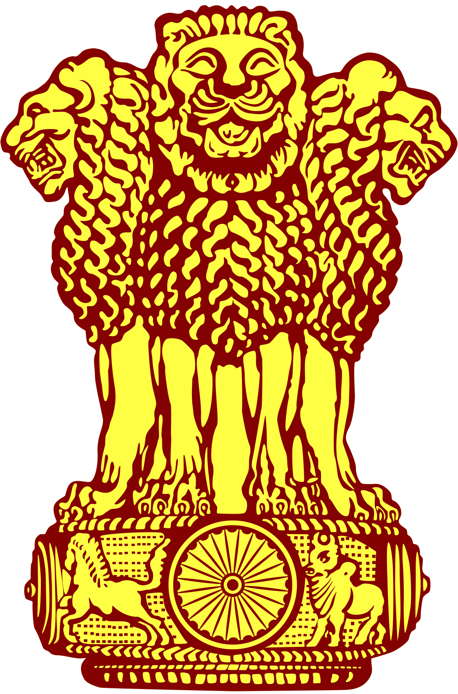

Legacy
In 1976, he was posthumously awarded Bharat Ratna, India's highest civilian honor.
In 2004, the Government of India issued a commemorative coin of ₹ 100 and ₹ 5 denomination to mark the centenary celebrations of him.

Terminal-1 of Chennai International Airport is named "Kamaraj Terminal".
Ennore Port in Chennai was renamed to Kamarajar Port Limited.
Maraimalai Nagar Railway Station also named after him as Maraimalai Nagar Kamarajar Railway Station.
His statue was erected in Parliament of India and Marina Beach to honor him.
Madurai University is renamed as Madurai Kamaraj University in his honor.
Roads
North Parade Road in Bengaluru and Parliament Road in New Delhi were named as "Kamaraj Road".
Marina Beach Road in Chennai and Ettayapuram Road in Thoothukudi were named as "Kamarajar Salai".